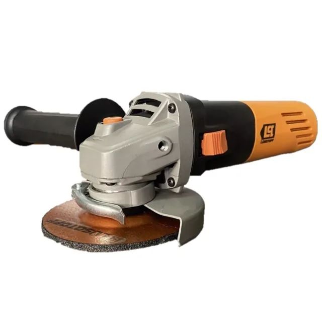

¿115 o 125?
La grande no es más potente.
Misma serie, misma potencia
La diferencia comprobable:
10 mm de disco.
10 mm de disco.
115 mmGWS 9-115 S
125 mmGWS 9-125 S
| Ficha Bosch | 9-115 S | 9-125 S |
|---|---|---|
| Potencia | 900 W | 900 W |
| Peso declarado | igual | igual |
| Diámetro máx. del disco | 115 mm | 125 mm |
Fichas oficiales Bosch. Radio 5 mm mayor: eso es todo lo que el número garantiza.
¿Y la profundidad de corte?
Depende del accesorio,
no del número.
no del número.
Caperuza GDE 115/125 · disco 115
0 mm
Profundidad máxima declarada.Caperuza GDE 115/125 · disco 125
0 mm
Dato de ese accesorio, no de toda amoladora.Elegí por el disco que vas a usar y el modelo concreto que lo admite. No por “la más grande”.Un Bosch GWS 9-125 publica menos peso que un GWS 850 de 115 mm: son series distintas.
Guía
115 o 125 mm:
cuál para tu trabajo.
cuál para tu trabajo.
Diferencias reales, consumibles y modelos disponibles en Argentina.
Leer la guía →
tallerlab.com.ar/amoladoras/115-o-125/